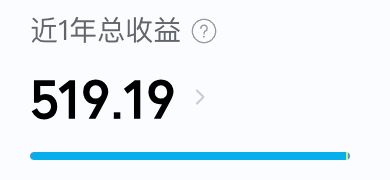
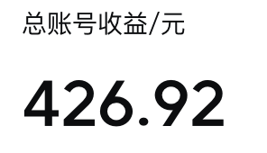

3000粉丝了，和兄弟们对齐下颗粒度
我的自媒体之路
一年时间，3000粉丝，两百万播放，仅仅视频播放收入就达到了900块。我的自媒体之旅，从何开始，有何收获，前路又将通向何方？
我很清楚我能走到现在靠的是什么，很大关系来源于各位粉丝大人的支持，对于我的内容的肯定，让我在怀疑与困顿的时候坚持了下来。
靠的是各位观众大老爷们的支持啊，这里我先给大家磕一个。
为什么开始做自媒体呢？
因为最开始为了分享自己做的小玩意儿，就是那些网页，程序代码，想要被更多的人看到，而且程序员经常这样，我也就效仿了起来，最开始我是从写博客开始的，最开始我创建了个csdn和公众号的账号，并且还发了一个篇编程爱好者入站的文章，当时在文章的最后还写了两小句话还感觉挺有文采的，第一段是：寥寥几字，道不尽来路坎坷。千顷浓墨，绘不出星海远方。第二段是：闲来无事，便想四处走走，天高海阔，也想八方留名。不知道大家觉得这两段话怎么样。反正现在看来，我并不后悔当初的开始反而感谢当年的自己，反而也有点相见恨晚，开始恨晚的感觉。但是我们从来不能改变过去，也不能改变未来，能做的只有改变现在。
最开始就是单纯的想分享自己的写代码，说什么虚荣心什么想装备的当然我也不否认，而且很大程度就是出于这些心理，现实世界中哪有那么多人那么高尚呢。
还有就是看别人在屏幕前展现自己真的很酷很迷人，自己也想要那种感觉，就是不想永远当观众。而且鸡汤什么的大家肯定在生活中都有接触，我当时可能就是刷到很多视频就是那种成功学相关的，说什么被动收入主动收入什么的。其实我感觉那些成功学说的很对，就比如说被动收入说是不需要后期再付出什么就可以获得回报，而主动收入一旦你不付出就会没有回报。其实最近我也有一次接受到了一点点这个概念，就是在我的博客上打了一个广告，只是加了个广告图片和链接就给了我200块，虽然不是每个月这个么多只是一次性的，但是还是很香，这种感觉就是你打造的的个人ip值钱的感觉。
还有就是后来，也就是最近我对于程序员职业的思考，尤其是近来大环境的问题让更多人认识到有自己的副业是多么的重要。我认为程序员要想暴富的话有三种途径，一是进大厂，二是买课，三是写在一个红色的小本本里面，可以吃喝不愁，生活规律。有人问我卖的课在哪里，其实我没有开始从粉丝客户身上变现，这也就导致我几乎没从自媒体赚到钱，截至目前为止也是全靠的为爱发电。
后面会卖课吗，可能会。可能在一两年之后，因为现在阶段对于我来说更重要的是学习和工作。而不是急功近利的去赚一些money。
做自媒体收获了什么？
【然后继续坐小板凳上开始装逼】
最大的改变就是让人变得自信起来吧，最开始怕这怕那的，害羞，自卑，最的不好怎么办，被人骂了怎么办，被身边的人看到了怎么办。其实最后真正开始做了以后才发现，并没有那么多人关注你。其实最后安慰自己的还是那句话：走自己的路，让别人去说。做自己，不要怕这怕那的。
做自媒体对我改变很大的一点是我的性格，之前感觉我就是特别的内心胆小自卑，但是现在逐渐的就胆大外向了起来。因为露脸啊什么的，克服了内心的恐惧。
我觉得做自媒体是一件非常锻炼人的事情，这里也非常推荐大家锻炼锻炼自己，不只是自学剪辑视频这些技术性的东西，文案的创意，视频进度的规划，更珍贵的是锻炼人的自信，不再畏头畏尾，我最开始声音都不敢漏，也是一点一点，从ai配音到录自己声音，到露脸戴墨镜到真的露脸再到各种沙雕的出境动作，都是有个过程的，没有一蹴而就的。
还有就是我对于很远的未来的思考，有时候我会这样想：一百年之后我会剩下什么，可能就是这些视频和我在github里面的代码了吧，这些二进制的东西会跨越时间的长河，尽可能久远地保留下去。
但是做自媒体并不是目中无人，不思进取。尤其像我这种是个人做自媒体，没有团队，没有巨大的精力去学一些技术性创作视频，肯定视频难以媲美团队做出来的，除非那些太厉害的人，像鱼皮啊，英雄哥啊，实力不凡，做自媒体的思路也是一流。但我很明显不是，看惯了大佬的传奇经历，可以更加努力，但还是要接受自己的平庸，与自己和解。
后续规划
讲讲关于自己对自媒体的领悟，
其实我知道做自媒体要做垂直，做的教程太偏技术会导致受众群体局限，教程越高端受众群体就越小。但是很多事情是没有选择的，或者说难以选择的，我觉得更想做真实的自己，视频更多的也是展示了我的学习之旅，学了什么就分享下什么。所以显得乱七八糟的，偶尔是日常偶尔是代码。但是估计以后就是这样了。但是也会尽力去输出一些成体系的内容。
这个视频的稿子呢，我会将其放在我的博客上，大家喜欢的话可以去看文字版。
待做视频清单：
程序员如何接单
python好找工作吗？
收益

